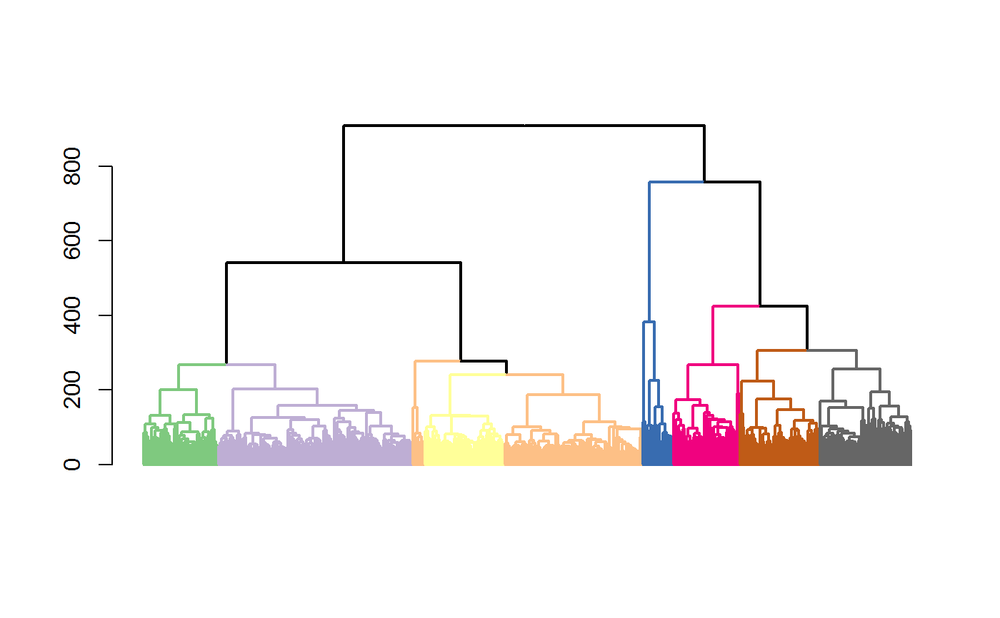

plot_optimal_CORE.Rdafter an optimal cluster has been identified, users may use this function to plot the resulting dendrogram with the branch colors represent clutering results
plot_optimal_CORE(original_tree, optimal_cluster = NULL, shift = -100, values = NULL)
| original_tree | a dendrogram object |
|---|---|
| optimal_cluster | a vector of cluster IDs for cells in the dendrogram |
| shift | a numer specifying the gap between the dendrogram and the colored |
| values | a vector containing color values of the branches and the colored bar underneath the tree bar underneath the dendrogram. This parameter allows better selection of colors for the display. |
a plot with colored braches and bars for the optimal clustering result
day5 <- sample2 mixedpop2 <-new_summarized_scGPS_object(ExpressionMatrix = day5$dat5_counts, GeneMetadata = day5$dat5geneInfo, CellMetadata = day5$dat5_clusters) CORE_cluster <- CORE(mixedpop2, remove_outlier = c(0))#>#>#>#>#>#>#>#>#>#>#>#>#>#>#>#>#>#>#>#>#>#>#>#>#>#>#>#>#>#>#>#>#>#>#>#>#>#>#>#>#>#>#>#>#>#>#>#>#>#>#>#>#>#>key_height <- CORE_cluster$optimalClust$KeyStats$Height optimal_res <- CORE_cluster$optimalClust$OptimalRes optimal_index = which(key_height == optimal_res) plot_optimal_CORE(original_tree= CORE_cluster$tree, optimal_cluster = unlist(CORE_cluster$Cluster[optimal_index]), shift = -2000)#>#>#>#>#>#>#>#>#>#>#>#>#>#>#>#>#>